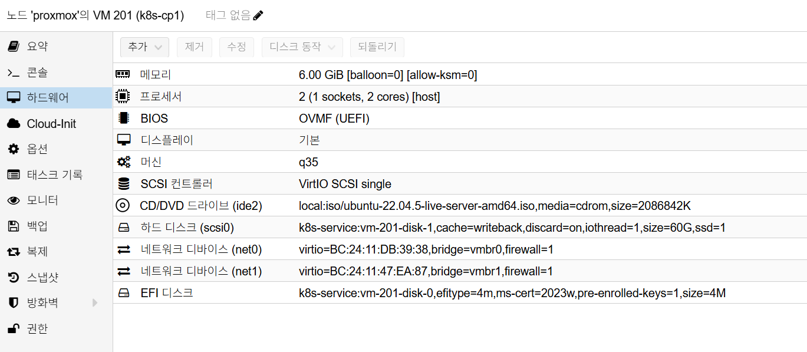
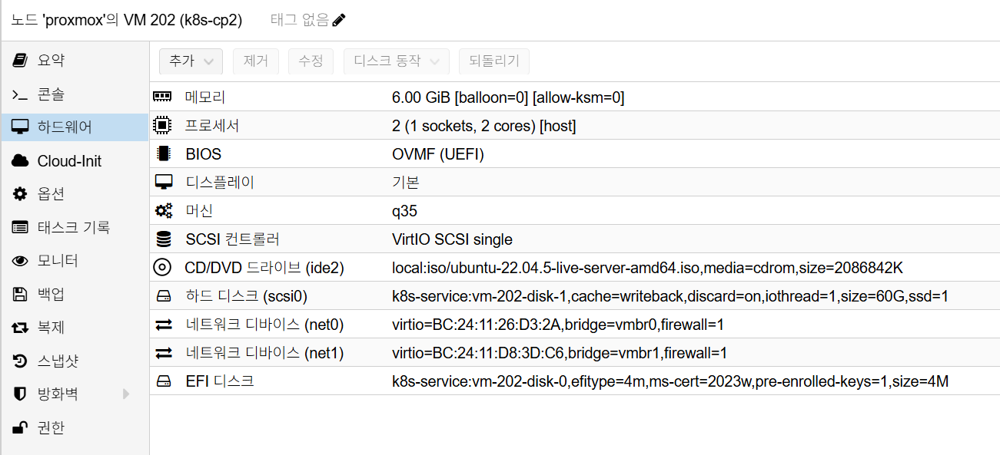
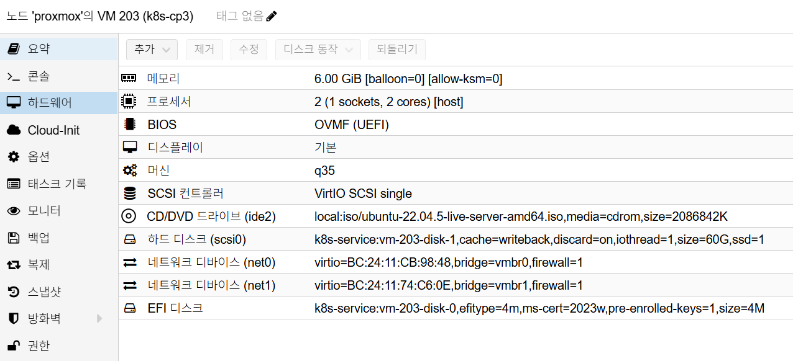
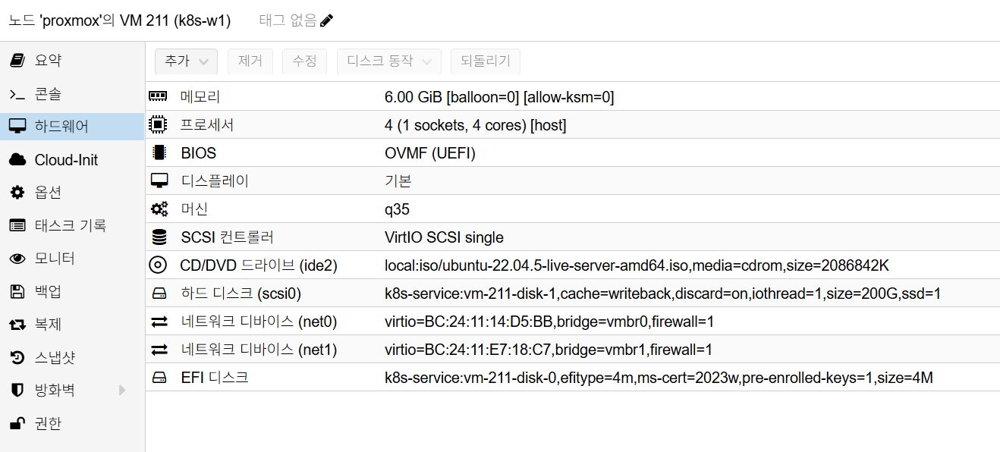
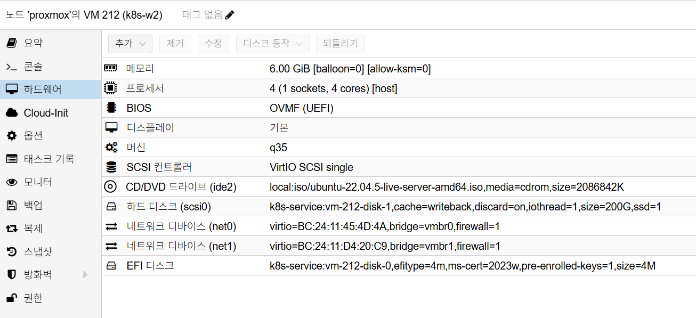

K8s Installation
목적과 범위
이 문서는 Proxmox VE 기반 Ubuntu 22.04 환경에서 Kubernetes HA 클러스터를 처음부터 구축하는 표준 절차를 정의합니다.
구축 범위: - Proxmox VM 5대 생성 (Control Plane 3, Worker 2) - kubeadm 기반 Kubernetes v1.29.x 설치 - Cilium CNI 설치 - kube-vip 기반 API VIP 구성 - MetalLB + ingress-nginx 설치 - etcd 자동 백업(systemd timer) 설정
설치 전 선택 FAQ
1. Ubuntu Desktop vs Server
- Proxmox VM 기반 Kubernetes 노드는
Ubuntu Server 22.04 LTS를 사용합니다. - Desktop 이미지는 GUI 오버헤드가 커서 운영 표준에서 제외합니다.
권장 ISO 예시:
- ubuntu-22.04.x-live-server-amd64.iso
2. SCSI Controller 선택
- Kubernetes VM은
VirtIO SCSI single을 권장합니다. - 디스크 I/O 경합이 줄어들어 control-plane/worker 동시 부하에서 유리합니다.
3. Ubuntu 24.04를 설치했을 때 22.04로 되돌리는 방법
- VM을 새로 만들지 않고 기존 VM에 ISO만 교체해 재설치합니다.
- 설치 중
Use entire disk를 선택하면 디스크 내부 데이터가 초기화됩니다.
주의: - VM 자체(CPU/RAM/NIC 설정)는 유지되지만, 디스크 내부 OS/파일은 삭제됩니다.
목표 아키텍처
| 노드 | 역할 | vCPU | RAM | 디스크 | 내부 IP |
|---|---|---|---|---|---|
| k8s-cp1 | control-plane | 2 | 6GB | 60GB | 10.10.10.11 |
| k8s-cp2 | control-plane | 2 | 6GB | 60GB | 10.10.10.12 |
| k8s-cp3 | control-plane | 2 | 6GB | 60GB | 10.10.10.13 |
| k8s-w1 | worker | 4 | 6GB | 200GB | 10.10.10.21 |
| k8s-w2 | worker | 4 | 6GB | 200GB | 10.10.10.22 |
| API VIP | kube-vip | - | - | - | 10.10.10.100 |
네트워크:
- vmbr0: 외부망 192.168.0.0/24
- vmbr1: 내부망 10.10.10.0/24 (etcd peer/control-plane 전용)
권장 버전:
- Kubernetes v1.29.x
- containerd (Ubuntu 22.04 기본 패키지)
- kube-vip v0.8.2
- Cilium v1.15.5
- etcdctl v3.5.10
1. Proxmox 사전 준비
- Proxmox VE
8.x이상, Ubuntu ISO(ubuntu-22.04.5-live-server-amd64.iso)를 준비합니다. - Proxmox UI에서
vmbr1내부 브리지를 생성합니다. vmbr1에는 호스트 IP/물리 NIC를 연결하지 않습니다.
검증:
- Proxmox Node > Network에서 vmbr0, vmbr1 둘 다 존재
- vmbr1 상태가 Active
2. VM 생성
각 VM 공통 권장값:
- Machine: q35
- BIOS: OVMF (UEFI) + EFI Disk
- SCSI Controller: VirtIO SCSI single
- NIC 모델: VirtIO
- NIC 2개: vmbr0 + vmbr1
- Ballooning: 비활성화 (balloon=0)
- KSM: 비활성화 (allow-ksm=0)
- NIC 방화벽: 활성화 (firewall=1)
생성 후 반드시 확인:
- VM 5대 모두 NIC 2개 장착
- cp 계열은 2 vCPU / 6GB RAM / 60GB Disk
- worker 계열은 4 vCPU / 6GB RAM / 200GB Disk
Proxmox VM H/W 참고 이미지
아래 이미지는 Proxmox Hardware 탭 기준의 실제 구성 예시입니다.
- k8s-cp1

캡션:2 vCPU,6GB RAM,60GB Disk,NIC 2개 (vmbr0 + vmbr1),q35,OVMF (UEFI),balloon=0,allow-ksm=0 - k8s-cp2

캡션:2 vCPU,6GB RAM,60GB Disk,NIC 2개 (vmbr0 + vmbr1),q35,OVMF (UEFI),balloon=0,allow-ksm=0 - k8s-cp3

캡션:2 vCPU,6GB RAM,60GB Disk,NIC 2개 (vmbr0 + vmbr1),q35,OVMF (UEFI),balloon=0,allow-ksm=0 - k8s-w1

캡션:4 vCPU,6GB RAM,200GB Disk,NIC 2개 (vmbr0 + vmbr1),q35,OVMF (UEFI),balloon=0,allow-ksm=0 - k8s-w2

캡션:4 vCPU,6GB RAM,200GB Disk,NIC 2개 (vmbr0 + vmbr1),q35,OVMF (UEFI),balloon=0,allow-ksm=0
3. Ubuntu 22.04 설치
모든 VM에서 동일하게 설치합니다.
- 설치 중 네트워크는 NIC 2개 모두 DHCP 유지
- Install OpenSSH Server 활성화
- Hostname은 각 노드명으로 지정 (k8s-cp1 등)
설치 후 검증:
ip -br a
enp6s18은 외부망 DHCP 주소enp6s19는 아직 내부 고정 IP 적용 전
4. 내부망 고정 IP 설정 (모든 노드)
각 노드에서 /etc/netplan/01-k8s.yaml을 아래 템플릿으로 생성 후 IP만 변경합니다.
network:
version: 2
renderer: networkd
ethernets:
enp6s18:
dhcp4: true
enp6s19:
dhcp4: no
addresses:
- <NODE_INTERNAL_IP>/24
적용:
sudo chmod 600 /etc/netplan/01-k8s.yaml
sudo netplan apply
ip -br a
노드별 내부 IP:
- k8s-cp1: 10.10.10.11
- k8s-cp2: 10.10.10.12
- k8s-cp3: 10.10.10.13
- k8s-w1: 10.10.10.21
- k8s-w2: 10.10.10.22
통신 검증 (cp1 예시):
ping -c 3 10.10.10.12
ping -c 3 10.10.10.21
내부망 강제 원칙:
- Kubernetes INTERNAL-IP는 vmbr1(10.10.10.0/24) 기준으로 통일합니다.
- 설치 직후 kubectl get nodes -o wide에서 외부망(192.168.0.x)이 잡히면 node-ip 강제 설정을 적용합니다.
5. 공통 OS 준비 (5대 전부)
5.1 필수 패키지
sudo apt update
sudo apt install -y curl apt-transport-https ca-certificates gnupg lsb-release
5.2 Swap 완전 제거
sudo swapoff -a
sudo sed -i '/swap/ s/^/#/' /etc/fstab
sudo rm -f /swap.img
swapon --show
swapon --show 출력이 비어 있어야 합니다.
5.3 커널 모듈
sudo tee /etc/modules-load.d/k8s.conf >/dev/null <<'EOF2'
overlay
br_netfilter
EOF2
sudo modprobe overlay
sudo modprobe br_netfilter
5.4 sysctl
sudo tee /etc/sysctl.d/k8s.conf >/dev/null <<'EOF2'
net.bridge.bridge-nf-call-iptables = 1
net.bridge.bridge-nf-call-ip6tables = 1
net.ipv4.ip_forward = 1
EOF2
sudo sysctl --system
6. containerd 설치 (5대 전부)
sudo apt update
sudo apt install -y containerd
sudo mkdir -p /etc/containerd
sudo containerd config default | sudo tee /etc/containerd/config.toml >/dev/null
sudo sed -i 's/SystemdCgroup = false/SystemdCgroup = true/' /etc/containerd/config.toml
sudo systemctl restart containerd
sudo systemctl enable containerd
systemctl is-active containerd
systemctl is-active containerd 결과가 active여야 합니다.
7. kubeadm/kubelet/kubectl 설치 (5대 전부)
sudo mkdir -p /etc/apt/keyrings
curl -fsSL https://pkgs.k8s.io/core:/stable:/v1.29/deb/Release.key \
| sudo gpg --dearmor -o /etc/apt/keyrings/kubernetes-apt-keyring.gpg
echo "deb [signed-by=/etc/apt/keyrings/kubernetes-apt-keyring.gpg] https://pkgs.k8s.io/core:/stable:/v1.29/deb/ /" \
| sudo tee /etc/apt/sources.list.d/kubernetes.list
sudo apt update
sudo apt install -y kubelet kubeadm kubectl
sudo apt-mark hold kubelet kubeadm kubectl
kubeadm version
8. cp1 초기화
cp1에서 /root/kubeadm-init.yaml 생성:
apiVersion: kubeadm.k8s.io/v1beta3
kind: ClusterConfiguration
controlPlaneEndpoint: "10.10.10.100:6443"
apiServer:
certSANs:
- 10.10.10.11
- 10.10.10.12
- 10.10.10.13
- 10.10.10.100
networking:
podSubnet: "10.244.0.0/16"
---
apiVersion: kubeadm.k8s.io/v1beta3
kind: InitConfiguration
localAPIEndpoint:
advertiseAddress: "10.10.10.11"
bindPort: 6443
nodeRegistration:
kubeletExtraArgs:
node-ip: "10.10.10.11"
초기화:
sudo kubeadm init --config=/root/kubeadm-init.yaml
kubectl 설정:
mkdir -p $HOME/.kube
sudo cp /etc/kubernetes/admin.conf $HOME/.kube/config
sudo chown $(id -u):$(id -g) $HOME/.kube/config
kubectl get nodes
주의:
- controlPlaneEndpoint와 certSANs를 반드시 포함해야 VIP TLS 에러를 방지합니다.
- 이 시점 NotReady는 정상입니다(CNI 미설치).
9. Control Plane Join (cp2, cp3)
중요 원칙:
- CP join은 VIP(10.10.10.100)가 아니라 cp1(10.10.10.11) 기준으로 진행합니다.
- 내부망 IP를 advertiseAddress/node-ip에 명시합니다.
cp1에서 준비:
sudo kubeadm init phase upload-certs --upload-certs
kubeadm token create --print-join-command
cp2 설정:
echo 'KUBELET_EXTRA_ARGS=--node-ip=10.10.10.12' | sudo tee /etc/default/kubelet
sudo systemctl daemon-reload
sudo systemctl restart kubelet
cp2 /root/join-cp2.yaml:
apiVersion: kubeadm.k8s.io/v1beta3
kind: JoinConfiguration
discovery:
bootstrapToken:
apiServerEndpoint: "10.10.10.11:6443"
token: "<TOKEN>"
caCertHashes:
- "sha256:<HASH>"
controlPlane:
certificateKey: "<CERT_KEY>"
localAPIEndpoint:
advertiseAddress: "10.10.10.12"
bindPort: 6443
nodeRegistration:
name: "k8s-cp2"
kubeletExtraArgs:
node-ip: "10.10.10.12"
cp2 join:
sudo kubeadm join --config /root/join-cp2.yaml
cp3도 동일 절차로 10.10.10.13 값만 바꿔서 진행합니다.
10. etcd 3멤버 확인 + etcdctl 설치
cp1에서 etcdctl 설치:
ETCD_VER=v3.5.10
wget https://github.com/etcd-io/etcd/releases/download/${ETCD_VER}/etcd-${ETCD_VER}-linux-amd64.tar.gz
tar xzf etcd-${ETCD_VER}-linux-amd64.tar.gz
sudo mv etcd-${ETCD_VER}-linux-amd64/etcdctl /usr/local/bin/
rm -rf etcd-${ETCD_VER}-linux-amd64 etcd-${ETCD_VER}-linux-amd64.tar.gz
etcdctl version
멤버 확인:
sudo ETCDCTL_API=3 etcdctl \
--cacert=/etc/kubernetes/pki/etcd/ca.crt \
--cert=/etc/kubernetes/pki/etcd/server.crt \
--key=/etc/kubernetes/pki/etcd/server.key \
--endpoints=https://127.0.0.1:2379 \
member list
started 멤버가 3개여야 합니다.
11. Worker Join (w1, w2)
cp1에서 토큰 생성:
kubeadm token create --print-join-command
각 worker에서 join:
sudo kubeadm join 10.10.10.11:6443 \
--token <TOKEN> \
--discovery-token-ca-cert-hash sha256:<HASH>
worker 내부 IP 고정:
# w1
echo 'KUBELET_EXTRA_ARGS=--node-ip=10.10.10.21' | sudo tee /etc/default/kubelet
# w2
echo 'KUBELET_EXTRA_ARGS=--node-ip=10.10.10.22' | sudo tee /etc/default/kubelet
sudo systemctl daemon-reload
sudo systemctl restart kubelet
검증(cp1):
kubectl get nodes -o wide
INTERNAL-IP가 외부망으로 잡힌 경우(예: 192.168.0.x) 보정:
# cp1
echo 'KUBELET_EXTRA_ARGS=--node-ip=10.10.10.11' | sudo tee /etc/default/kubelet
# cp2
echo 'KUBELET_EXTRA_ARGS=--node-ip=10.10.10.12' | sudo tee /etc/default/kubelet
# cp3
echo 'KUBELET_EXTRA_ARGS=--node-ip=10.10.10.13' | sudo tee /etc/default/kubelet
# w1
echo 'KUBELET_EXTRA_ARGS=--node-ip=10.10.10.21' | sudo tee /etc/default/kubelet
# w2
echo 'KUBELET_EXTRA_ARGS=--node-ip=10.10.10.22' | sudo tee /etc/default/kubelet
sudo systemctl daemon-reload
sudo systemctl restart kubelet
kubectl get nodes -o wide
12. Cilium 설치
Helm 설치(미설치 시):
command -v helm >/dev/null 2>&1 || curl https://raw.githubusercontent.com/helm/helm/main/scripts/get-helm-3 | bash
helm version
cp1에서 Cilium 설치:
helm repo add cilium https://helm.cilium.io/
helm repo update
helm install cilium cilium/cilium \
--version 1.15.5 \
--namespace kube-system \
--set ipam.mode=kubernetes \
--set kubeProxyReplacement=true
검증:
kubectl -n kube-system get pods -o wide | egrep 'cilium|coredns'
kubectl get nodes
13. kube-vip 배포 (cp1/cp2/cp3 모두)
cp1에서 manifest 생성:
export VIP=10.10.10.100
export IFACE=enp6s19
sudo ctr image pull ghcr.io/kube-vip/kube-vip:v0.8.2
sudo ctr run --rm --net-host ghcr.io/kube-vip/kube-vip:v0.8.2 vip /kube-vip manifest pod \
--interface $IFACE \
--address $VIP \
--controlplane \
--services \
--arp \
--leaderElection \
| sudo tee /tmp/kube-vip.yaml
cp1/cp2/cp3 각각 적용:
sudo cp /tmp/kube-vip.yaml /etc/kubernetes/manifests/kube-vip.yaml
RBAC 적용:
apiVersion: v1
kind: ServiceAccount
metadata:
name: kube-vip
namespace: kube-system
---
apiVersion: rbac.authorization.k8s.io/v1
kind: ClusterRole
metadata:
name: kube-vip-role
rules:
- apiGroups: [""]
resources: ["services","endpoints","nodes","pods"]
verbs: ["get","list","watch"]
- apiGroups: ["coordination.k8s.io"]
resources: ["leases"]
verbs: ["get","list","watch","create","update","patch"]
---
apiVersion: rbac.authorization.k8s.io/v1
kind: ClusterRoleBinding
metadata:
name: kube-vip-binding
roleRef:
apiGroup: rbac.authorization.k8s.io
kind: ClusterRole
name: kube-vip-role
subjects:
- kind: ServiceAccount
name: kube-vip
namespace: kube-system
kubectl apply -f kube-vip-rbac.yaml
kubeconfig를 VIP로 전환:
sudo sed -i "s#server: https://.*:6443#server: https://10.10.10.100:6443#g" $HOME/.kube/config
kubectl cluster-info
kubectl get nodes
VIP 확인:
ip -br a | grep 10.10.10.100
14. MetalLB 설치
설치:
kubectl apply -f https://raw.githubusercontent.com/metallb/metallb/v0.14.5/config/manifests/metallb-native.yaml
IP 풀 생성 (metallb-pool.yaml):
apiVersion: metallb.io/v1beta1
kind: IPAddressPool
metadata:
name: default-pool
namespace: metallb-system
spec:
addresses:
- 192.168.0.200-192.168.0.220
---
apiVersion: metallb.io/v1beta1
kind: L2Advertisement
metadata:
name: default-l2
namespace: metallb-system
spec:
ipAddressPools:
- default-pool
적용:
kubectl apply -f metallb-pool.yaml
kubectl -n metallb-system get pods
15. ingress-nginx 설치
kubectl apply -f https://raw.githubusercontent.com/kubernetes/ingress-nginx/controller-v1.11.3/deploy/static/provider/cloud/deploy.yaml
kubectl -n ingress-nginx get pods
16. etcd 자동 백업 (cp1)
백업 디렉터리:
sudo mkdir -p /var/backups/etcd
sudo chmod 700 /var/backups/etcd
백업 스크립트 /usr/local/bin/etcd-backup.sh:
#!/usr/bin/env bash
set -euo pipefail
BACKUP_DIR=/var/backups/etcd
TS=$(date -u +%Y%m%dT%H%M%SZ)
FILE="${BACKUP_DIR}/etcd-${TS}.db"
ETCDCTL_API=3 etcdctl \
--cacert=/etc/kubernetes/pki/etcd/ca.crt \
--cert=/etc/kubernetes/pki/etcd/server.crt \
--key=/etc/kubernetes/pki/etcd/server.key \
--endpoints=https://127.0.0.1:2379 \
snapshot save "${FILE}"
ls -1t ${BACKUP_DIR}/etcd-*.db | tail -n +31 | xargs -r rm -f
권한:
sudo chmod 700 /usr/local/bin/etcd-backup.sh
서비스 /etc/systemd/system/etcd-backup.service:
[Unit]
Description=Kubernetes etcd snapshot backup
After=network-online.target
[Service]
Type=oneshot
ExecStart=/usr/local/bin/etcd-backup.sh
타이머 /etc/systemd/system/etcd-backup.timer:
[Unit]
Description=Run etcd backup daily (UTC)
[Timer]
OnCalendar=*-*-* 00:00:00 UTC
Persistent=true
Unit=etcd-backup.service
[Install]
WantedBy=timers.target
활성화:
sudo systemctl daemon-reload
sudo systemctl enable --now etcd-backup.timer
systemctl list-timers | grep etcd-backup
sudo systemctl start etcd-backup.service
ls -lh /var/backups/etcd
17. 최종 검증
필수 검증 항목:
1. kubectl get nodes -o wide에서 5노드 모두 Ready
2. cp1에서 etcdctl member list 결과 started 3개
3. kubectl -n kube-system get pods에서 cilium/coredns/kube-vip 정상
4. ip -br a | grep 10.10.10.100로 VIP 확인
5. MetalLB/ingress-nginx 파드 Running
6. systemctl list-timers | grep etcd-backup로 백업 타이머 활성 확인
18. 스냅샷 베이스라인
최종 검증 완료 후 VM 5대 종료 상태에서 Proxmox 스냅샷을 생성합니다.
스냅샷 생성 전 아래 정리 작업을 먼저 수행합니다.
sudo rm -rf /tmp/*
sudo rm -rf /var/tmp/*
sudo apt autoremove -y
sudo apt clean
sudo journalctl --vacuum-time=1s
cat /dev/null > ~/.bash_history && history -c
권장 스냅샷 이름:
- baseline-ha-k8s-22.04
- baseline-ha-k8s-3cp-vip-metallb-ingress-utc-swapfixed